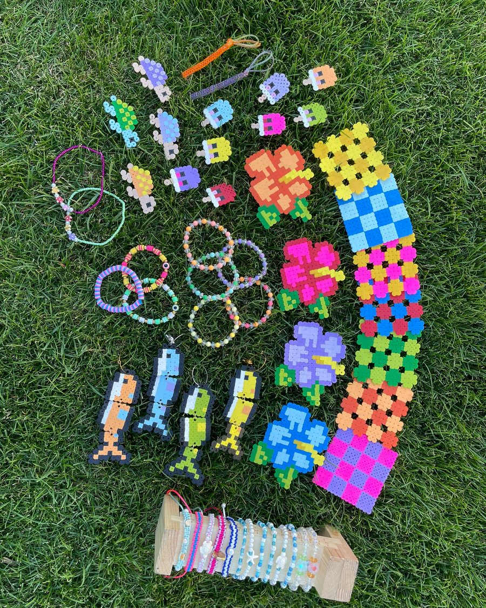

O tvorbe
Ručne. Pomaly.
S dôrazom na detail.
Náramky, kľúčenky, podložky aj drobnosti z korálok. Všetko vzniká ručne, korálku po korálke. Farby a materiály vyberám podľa charakteru každého kúska a veľkosť, meno či motív prispôsobím tebe.
- 100 % ručná práca
- Kvalitné materiály
- Farby, meno a veľkosť na mieru